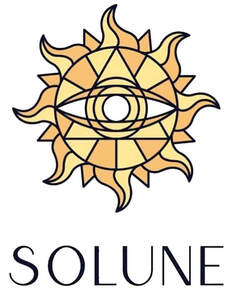

Trade Mark Journal No.2025/027 4 July 2025
UK00004224935 26 June 2025 (9,14,18,20,25,35)

- Class 9
- Glasses; Spectacles [glasses]; Lenses for glasses; Magnifying glasses; Prescription glasses; Glasses frames; Frames for glasses; Optical glasses; Eye glasses; Anti-glare glasses; Glasses, sunglasses and contact lenses; 3-D glasses; Frames for eye glasses; Replacement lenses for glasses; Sun glasses; Magnifying glasses [optics]; Corrective glasses; Protective glasses; Reading glasses; 3D glasses; Spectacle glasses; Smart glasses; Sports glasses; Glasses for sports; Dustproof glasses; Waling glasses; Ski glasses; 3D eye glasses; Opera glasses; Eyeglasses; Glasses cases; Lenses for eyeglasses; Covers for glasses; Frames for spectacles and sunglasses; Sight glasses [optical]; Theatre glasses; Magnifying eyeglasses; Cyclists' glasses; Shooting glasses [optical]; Sports' glasses; Children's eye glasses; Lenses for sunglasses; Lorgnettes [opera glasses]; Optical lenses for eyeglasses; Frames for eyeglasses; Antiglare glasses (anti-glare); Lenses for spectacles; Sunglasses; Cases for eyeglasses and sunglasses; Prescription eyeglasses; Optical lenses for use with sunglasses; Optical lenses for sunglasses; Boxes [cases] for glasses; Cases for children's eye glasses; Goggles; Prescription sunglasses; Frames for sunglasses; Sunglasses frames; Cases for spectacles and sunglasses; Optical lenses for spectacles; Chains for spectacles and for sunglasses; Chains for spectacles and sunglasses; Glass ophthalmic lenses; Frames for spectacles; Prescription spectacles; Clip-on sunglasses; Sunglass lenses; Optical viewing glasses [peep holes] for doors; Magnifying lenses; Safety glasses for protecting the eyes; Protective eyeglasses; Colour blindness correction glasses; Eyeglass lenses; Color blindness correction glasses; Spectacles; Anti-glare spectacles; Prescription eyewear; Monocle frames; Virtual reality glasses; Straps for sunglasses; Eyeglasses for sports; Eyewear; Chains for eyeglasses; Plastic lenses; Cords for eyeglasses; Spectacles [optics]; Prescription goggles for swimming; Frames for pince-nez; Camera goggles; Magnetic clip-on sunglass lenses; Glacier eyeglasses; Fashion eyeglasses; Optical glass; Anti-dazzle spectacles; Fashion sunglasses; Covers for sunglasses; Chains for sunglasses; Cords for sunglasses; Cases for sunglasses; Sunglasses for pets; Sunglass temples; Boxes [cases] for sunglasses; Eyewear pouches; Sunglass cords; Protective eyewear; Sunglass nose pads; Sports eyewear; Sunglass cases; Cases for eyeglasses; Laptop bags.
- Class 14
- Leather jewelry boxes.
- Class 18
- Bags; Tote bags; Luggage bags; Duffle bags; Duffel bags; Carry-on bags; Toiletry bags; Bags for clothes; Drawstring bags; Carry-all bags; Belt bags and hip bags; Nose bags [feed bags]; Bags (Nose -) [feed bags]; Carrying bags; Grocery tote bags; Cross-body bags; Bags for umbrellas; Diaper bags; Luggage, bags, wallets and other carriers; Crossbody bags; Cloth bags; Bucket bags; Sling bags; Leather bags; Nappy bags; Canvas bags; Belt bags; Duffel bags for travel; Shoe bags; Clutch bags; Wheeled bags; Kit bags; Souvenir bags; Messenger bags; Travel bags; Bags for travel; Garment bags; Leather bags and wallets; Toilet bags; Shoulder bags; Make-up bags; Cosmetic bags; Waterproof bags; Reusable shopping bags; Makeup bags; Umbrella bags; Camping bags; Towelling bags; Courier bags; Bags for campers; Roll bags; Bags for carrying pets; Gym bags; Knitted bags; Bags [envelopes, pouches] of leather, for packaging; Bags [envelopes, pouches] for packaging of leather; Bags [envelopes, pouches] of leather for packaging; Hand bags; Attaché bags; Travelling bags; Cabin bags; Flight bags; Traveling bags; Overnight bags; Beach bags; Bags for climbers; Mesh shopping bags; Mesh bags for shopping; Boot bags; Canvas shopping bags; Leather shopping bags; Bum bags; Knitting bags; Hiking bags; Frames for bags [structural parts of bags]; Roller bags; Nose bags; Wash bags for carrying toiletries; Suit bags; Baby carrying bags; Hunting bags; Gladstone bags; Feed bags; School book bags; Bags for school; School bags; School knapsacks; Sports [Bags for -]; Randsels [Japanese school satchels]; School backpacks; Satchels (School -); School satchels; Evening bags; Purse frames [handbags]; Frames for umbrellas; Handbags, purses and wallets; Wallets; Purses; Pocketbooks [handbags]; Pocket wallets; Wallets (Pocket -); Leather wallets; Clutch purses [handbags]; Leather purses; Purses [leatherware]; Coin purses; Card wallets [leatherware]; Clutches [purses]; Leather coin purses; Billfolds; Straps for coin purses; Wallets with card compartments; Card wallets; Nappy wallets; Clutch purses; Cosmetic purses; Handbags; Small purses; Purses, not of precious metal [handbags]; Wallets for attachment to belts; Frames for coin purses [structural parts of coin purses]; Multi-purpose purses; Change purses; Wrist-mounted wallets; Pocketbooks; Holders in the nature of wallets for keys; Straps for handbags; Leather credit card wallets; Small clutch purses; Purses, not made of precious metal [handbags]; Wallets including card holders; Leather handbags; Key wallets; Ankle-mounted wallets; Evening purses; Coin purse frames; Handbags for ladies; Ladies handbags; Handbags for men; Purse frames; Wallets incorporating card holders; Credit card wallets; Purses of precious metal; Chain mesh purses; Clutch handbags; Wrist mounted purses; wallet chains; Business card holders in the nature of wallets; Credit card cases [wallets]; Wallets of precious metal; Handbag straps; Briefcases [leatherware]; Change purses of precious metal; Coin purses, not of precious metal; Handbags made of leather; Coin purses, not of precious metals; Briefcases [leather goods]; Leather briefcases; Briefcases; Purses made of precious metal; Purses, not of precious metal; Purses [not of precious metal]; Slouch handbags; Leather pouches; Pouches of leather; Tool bags of leather, empty; Coin purses not made of precious metal; Fashion handbags; Imitation leather bags; Pouches for holding make-up, keys and other personal items; Wallets, not of precious metal; Wallets [not of precious metal]; Leather suitcases; Small bags for men; Bags for sports clothing; Bags made of leather; Handbags made of imitations leather.
- Class 20
- Make-up mirrors for purses.
- Class 25
- Clothing; Jackets [clothing]; Ready-to-wear clothing; Woolen clothing; Furs [clothing]; Garments for protecting clothing; Layettes [clothing]; Clothing layettes; Linen clothing; Headbands [clothing]; Headbands for clothing; Gloves [clothing]; Gloves as clothing; Clothes; Aprons [clothing]; Maternity clothing; Kerchiefs [clothing]; Jerseys [clothing]; Denims [clothing]; Shorts [clothing]; Cashmere clothing; Capes (clothing); Oilskins [clothing]; Gabardines [clothing]; Silk clothing; Leather clothing; Clothing of leather; Leather (Clothing of -); Collars [clothing]; Parts of clothing, footwear and headgear; Knitted clothing; Veils [clothing]; Hoods [clothing]; Windproof clothing; Corsets [clothing, foundation garments]; Embroidered clothing; Wristbands [clothing]; Belts [clothing]; Belts for clothing; Bandeaux [clothing]; Rainproof clothing; Waterproof clothing; Casual clothing; Visors [clothing]; Jackets being sports clothing; Jackets (Stuff -) [clothing]; Stuff jackets [clothing]; Bottoms [clothing]; Playsuits [clothing]; Clothing for leisure wear; Ready-made clothing; Latex clothing; Trunks being clothing; Infant clothing; Woven clothing; Drawers [clothing]; Drawers as clothing; Leisure clothing; Ties [clothing]; Clothing for sports; Sports clothing; Athletic clothing; Clothing for children; Muffs [clothing]; Bodies [clothing]; Clothing for babies; Tops [clothing]; Clothing for infants; Clothing for cycling; Weatherproof clothing; Pockets for clothing; Fabric belts [clothing]; Water-resistant clothing; Handwarmers [clothing]; Triathlon clothing; Clothing for skiing; Beach clothing; Thermal clothing; Cowls [clothing]; Chaps (clothing); Men's clothing; Fishing clothing; Mitts [clothing]; Braces for clothing; Dance clothing; Sun visors [headwear]; Visors [headwear]; Visors being headwear; Sun hats; Beanie hats; Visors; Knitwear [clothing].
- Class 35
- Retail services connected with the sale of clothing and clothing accessories.
Simran Brahmbhatt